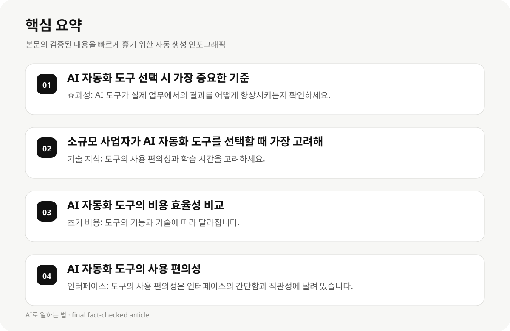

AI 자동화 도구 선택 시 가장 중요한 기준 #
소규모 사업자가 AI 자동화 도구를 선택할 때, 가장 중요한 기준은 효과성과 비용 효율성입니다. AI 도구는 비용 절감과 운영 효율성 향상에 기여할 수 있지만, 실제 업무에서의 적용 가능성과 사용 편의성도 고려해야 합니다.
AI 자동화 도구는 'if/then' 로직으로 진정한 의사결정을 가능하게 하며, 전문가의 편의성을 높입니다. 하지만 도구의 사용 편의성, 기술 지식, 그리고 실제 업무에서의 적용 가능성은 선택 시 매우 중요합니다.
- 효과성: AI 도구가 실제 업무에서의 결과를 어떻게 향상시키는지 확인하세요.
- 비용 효율성: 초기 비용과 지속적인 운영 비용을 비교하세요.
- 사용 편의성: 도구의 인터페이스, 학습 시간, 그리고 사용 편의성은 선택 시 중요한 요소입니다.
소규모 사업자가 AI 자동화 도구를 선택할 때 가장 고려해야 할 요소 #
소규모 사업자가 AI 자동화 도구를 선택할 때, 기술 지식이 부족할 수 있어 도구의 사용 편의성에 주의해야 합니다. 특히, 20개 이상의 과정을 동시에 자동화하는 것은 큰 실수입니다.
AI 자동화 도구의 비용 모델는 매우 중요합니다. 'flat-fee self-hosted' 모델은 소규모 사업자에게 가장 효율적입니다. 이 모델은 초기 비용이 낮고, 사용 편의성도 높은 도구를 제공합니다.
- 기술 지식: 도구의 사용 편의성과 학습 시간을 고려하세요.
- 비용 모델: 'flat-fee self-hosted' 모델이 가장 효율적입니다.
- 업무 복잡도: 20개 이상의 과정을 동시에 자동화하는 것은 실수입니다.
AI 자동화 도구의 비용 효율성 비교 #
AI 자동화 도구의 비용 효율성은 초기 비용과 지속적인 운영 비용에 따라 달라집니다. 초기 비용은 도구의 기능, 기술, 그리고 사용 편의성에 따라 다릅니다.
소규모 사업자가 AI 자동화 도구를 선택할 때, 초기 비용이 낮은 도구를 선정하는 것이 중요합니다. 예를 들어, 'flat-fee self-hosted' 모델은 초기 비용이 낮고, 사용 편의성도 높은 도구를 제공합니다.
- 초기 비용: 도구의 기능과 기술에 따라 달라집니다.
- 지속적인 운영 비용: 도구의 사용 편의성과 기능에 따라 달라집니다.
- 비용 모델: 'flat-fee self-hosted' 모델이 가장 효율적입니다.

AI 자동화 도구의 사용 편의성 #
AI 자동화 도구의 사용 편의성은 도구의 인터페이스, 학습 시간, 그리고 사용 편의성에 따라 달라집니다. 사용 편의성은 도구의 실제 업무 적용 가능성에 직접적인 영향을 미칩니다.
소규모 사업자가 AI 자동화 도구를 선택할 때, 도구의 사용 편의성은 매우 중요합니다. 예를 들어, 'customer support team'의 첫 대응 시간 감소와 'routine inquiries'의 60% 처리 가능성을 제공하는 도구는 실전에서 매우 유용합니다.
- 인터페이스: 도구의 사용 편의성은 인터페이스의 간단함과 직관성에 달려 있습니다.
- 학습 시간: 도구의 사용 편의성은 학습 시간과 기술 지식에 따라 달라집니다.
- 사용 편의성: 실제 업무에서의 적용 가능성은 도구의 사용 편의성에 직접적인 영향을 미칩니다.
AI 자동화 도구의 실제 업무 적용 가능성 #
AI 자동화 도구의 실제 업무 적용 가능성은 도구의 기능, 사용 편의성, 그리고 업무 복잡도에 따라 달라집니다. 실전에서의 적용 가능성은 도구의 효과성과 비용 효율성에 직접적인 영향을 미칩니다.
소규모 사업자가 AI 자동화 도구를 선택할 때, 도구의 실제 업무 적용 가능성은 매우 중요합니다. 예를 들어, 'customer support team'의 첫 대응 시간 감소와 'routine inquiries'의 60% 처리 가능성을 제공하는 도구는 실전에서 매우 유용합니다.
- 기능: 도구의 기능은 실제 업무에서의 결과를 어떻게 향상시키는지 확인하세요.
- 사용 편의성: 도구의 사용 편의성은 학습 시간과 기술 지식에 따라 달라집니다.
- 업무 복잡도: 20개 이상의 과정을 동시에 자동화하는 것은 실수입니다.
AI 자동화 도구 선택 시의 실수와 대응 전략 #
AI 자동화 도구 선택 시, 가장 큰 실수는 20개 이상의 과정을 동시에 자동화하는 것입니다. 이는 도구의 사용 편의성과 기술 지식에 따라 달라집니다.
소규모 사업자가 AI 자동화 도구를 선택할 때, 도구의 사용 편의성과 기술 지식은 매우 중요합니다. 예를 들어, 'flat-fee self-hosted' 모델은 초기 비용이 낮고, 사용 편의성도 높은 도구를 제공합니다.
- 20개 이상의 과정을 동시에 자동화하는 것은 실수입니다.
- 도구의 사용 편의성과 기술 지식은 선택 시 매우 중요합니다.
- 비용 모델: 'flat-fee self-hosted' 모델이 가장 효율적입니다.
AI 자동화 도구 선택 시의 실전 전략 #
소규모 사업자가 AI 자동화 도구를 선택할 때, 실전 기준과 비용 효율성을 고려해야 합니다. 이는 도구의 효과성, 비용, 사용 편의성, 그리고 실제 업무에서의 적용 가능성에 직접적인 영향을 미칩니다.
AI 자동화 도구 선택 시, 비용 모델과 사용 편의성은 매우 중요합니다. 예를 들어, 'flat-fee self-hosted' 모델은 초기 비용이 낮고, 사용 편의성도 높은 도구를 제공합니다.
- 실전 기준: 도구의 효과성과 비용 효율성은 선택 시 매우 중요합니다.
- 비용 모델: 'flat-fee self-hosted' 모델이 가장 효율적입니다.
- 사용 편의성: 도구의 사용 편의성은 학습 시간과 기술 지식에 따라 달라집니다.
AI 자동화 도구 선택 시의 실수와 대응 전략 #
AI 자동화 도구 선택 시, 가장 큰 실수는 20개 이상의 과정을 동시에 자동화하는 것입니다. 이는 도구의 사용 편의성과 기술 지식에 따라 달라집니다.
소규모 사업자가 AI 자동화 도구를 선택할 때, 도구의 사용 편의성과 기술 지식은 매우 중요합니다. 예를 들어, 'flat-fee self-hosted' 모델은 초기 비용이 낮고, 사용 편의성도 높은 도구를 제공합니다.
- 20개 이상의 과정을 동시에 자동화하는 것은 실수입니다.
- 도구의 사용 편의성과 기술 지식은 선택 시 매우 중요합니다.
- 비용 모델: 'flat-fee self-hosted' 모델이 가장 효율적입니다.